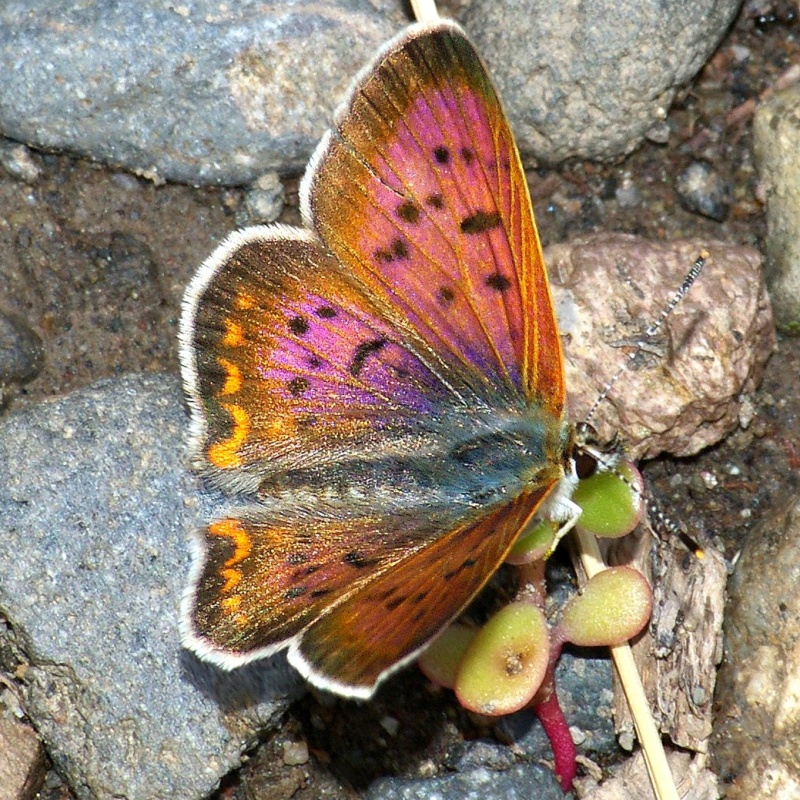

Tharsalea helloides
(was Lycaena helloides)
- Common name
- Purplish Copper
- Family
- Lycaenidae
- Family common name
- Gossamer Wings
- On the wing
- L April to M October, peaks in May and August
Two or three generations
- Habitat
- Various. Field corners with knotweed and fleabane, stream banks with docks, high country meadows, gardens.
- Larval host:
- Docks, smartweed, knotweed.
- Nectar plants:
- Thyme, white heather, catnip, Douglas aster, white clover, creeping buttercup, bird's foot trefoil, blue and purple mints, gumweed, tansy regwort, hawkbit, white fleabane, Canada thistle, knotweeds.
- Abundance
- C
Range Map
Seasonality